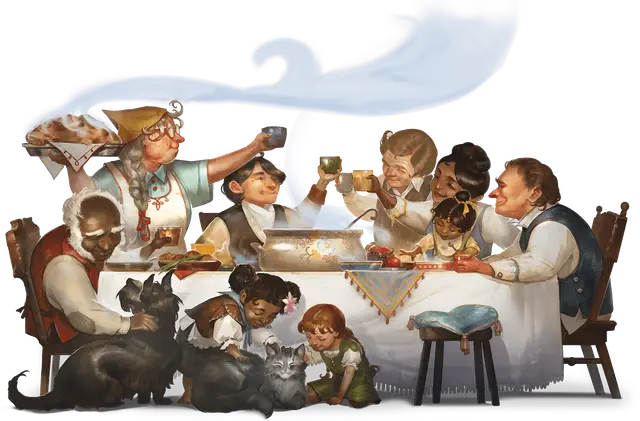

Полурослик
Halfling

Тип существа Гуманоид
Размер Маленький (рост около 2-3 футов)
Скорость 30 футов
Лелеемые и ведомые богами, которые ценят жизнь, дом и очаг, полурослики тяготеют к мирной сельской жизни, чей ход определяют семья и община. Тем не менее, многие полурослики обладают храбрым и предприимчивым духом, который ведёт их в путешествия, полные открытий, предоставляя им шанс исследовать большой мир и завести по пути новых друзей. Размером с человеческого ребёнка, они умеют незамеченными проходить сквозь толпу и проскальзывать в труднодоступных местах.
Любой, кто близко знаком с полуросликами — особенно с искателями приключений — вероятно, был свидетелем легендарной “удачи полуросликов” в действии. Когда полурослику угрожает смертельная опасность, будто бы незримые силы вступают на его защиту. Многие полурослики верят в силу удачи и приписывают этот необычный дар одному или нескольким из благосклонных к ним богов, например, Йондалле, Брандобарису, Чармалейн. Возможно, благодаря этому дару полурослики живут так долго (около 150 лет).
Общины полуросликов бывают самых разных видов. На каждое поселение, спрятанное в нетронутой части мира, приходится криминальный синдикат, подобный клану Боромар в сеттинге Эберрон, или местная банда полуросликов, как в сеттинге Тёмного солнца.
Полуросликов, предпочитающих жить под землей, иногда называют коренастыми полуросликами или крепышами. Кочевых полуросликов, а также тех, кто живет среди людей и другого высокого народа, иногда называют легконогими полуросликами или высокоростами.
Особенности
Вы обладаете следующими особенностями вида:
Храбрый. Вы совершаете с Преимуществом спасброски на избежание или окончание состояния Испуганный.
Проворство полуросликов. Вы можете перемещаться через пространство другого существа, если оно на размер больше вас, но вы не можете остановиться в этом пространстве.
Удача. Когда вы выбрасываете «1» на кости к20 при Тесте к20, вы можете перебросить кость, и вы должны использовать новый результат.
Естественная скрытность. Вы можете совершить действие Затаивание, даже если вы укрываетесь только за существом больше вас хотя бы на один размер.